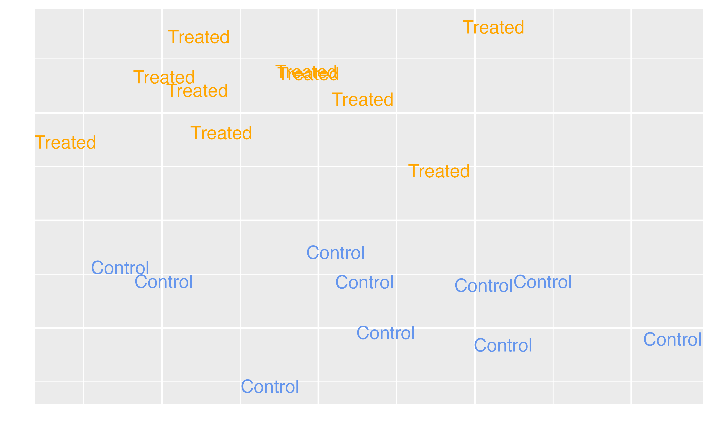
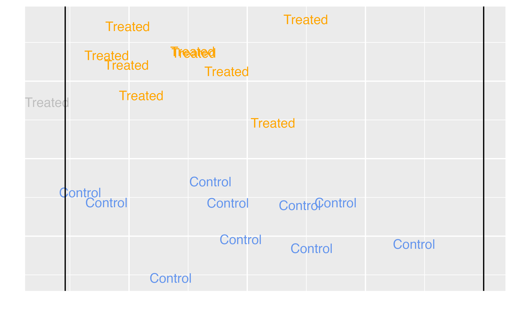
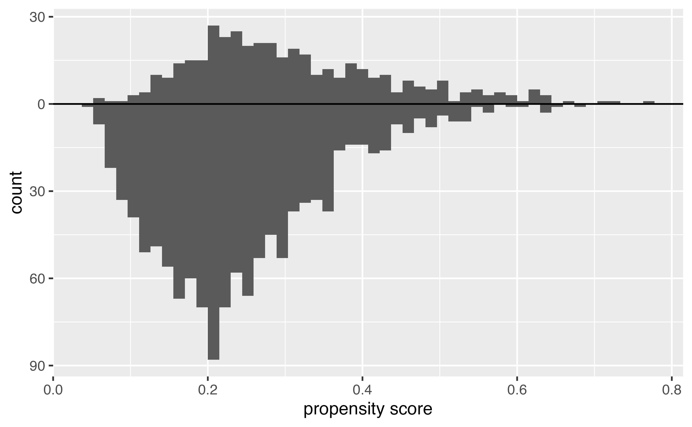
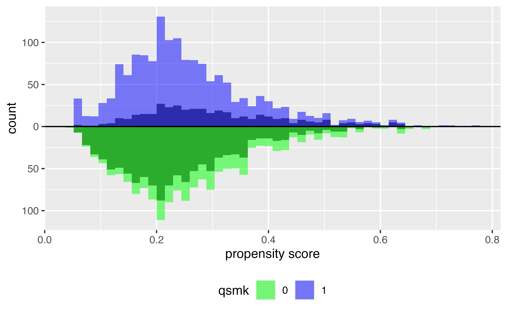
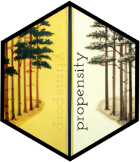

Using Propensity Scores
Wake Forest University
Propensity scores
Matching
Weighting
Stratification
Direct Adjustment
…

Image source: Simon Grund
Propensity scores
Matching
Weighting
Stratification
Direct Adjustment
…
Target estimands
Average Treatment Effect (ATE)
\[\tau = E[Y(1) - Y(0)]\]
Target estimands
|
Estimand |
Target population |
Example Research Question |
|---|---|---|
|
ATE |
Full population |
Should we decide whether to have extra magic hours all mornings to change the wait time for Seven Dwarfs Mine Train between 9-10 AM? Should a specific policy be applied to all eligible observations? |
Target estimands
Average Treatment Effect among the Treated (ATT)
\[\tau = E[Y(1) - Y(0) | Z = 1]\]

Target estimands
|
Estimand |
Target population |
Example Research Question |
|---|---|---|
|
ATT |
Exposed (treated) observations |
Should we stop extra magic hours to change the wait time for Seven Dwarfs Mine Train between 9-10 AMpm? Should we stop our marketing campaign to those currently receiving it? Should medical providers stop recommending treatment for those currently receiving it? |
Matching in R (ATT)
A `matchit` object
- method: 1:1 nearest neighbor matching without replacement
- distance: Propensity score
- estimated with logistic regression
- number of obs.: 1566 (original), 806 (matched)
- target estimand: ATT
- covariates: sex, race, age, I(age^2), education, smokeintensity, I(smokeintensity^2), smokeyrs, I(smokeyrs^2), exercise, active, wt71, I(wt71^2)Matching in R (ATT)
# A tibble: 806 × 71
i subclass weights seqn qsmk death yrdth modth
<chr> <fct> <dbl> <dbl> <dbl> <dbl> <dbl> <dbl>
1 11 1 1 428 1 0 NA NA
2 1220 1 1 23045 0 0 NA NA
3 15 2 1 446 1 1 88 1
4 1082 2 1 22294 0 0 NA NA
5 18 3 1 596 1 0 NA NA
6 534 3 1 14088 0 0 NA NA
7 23 4 1 618 1 0 NA NA
8 697 4 1 18085 0 0 NA NA
9 27 5 1 806 1 0 NA NA
10 879 5 1 21128 0 0 NA NA
# ℹ 796 more rows
# ℹ 63 more variables: dadth <dbl>, sbp <dbl>, dbp <dbl>,
# sex <fct>, age <dbl>, race <fct>, …Target estimands
Average Treatment Effect among the Controls (ATC)
\[\tau = E[Y(1) - Y(0) | Z = 0]\]
Target estimands
|
Estimand |
Target population |
Example Research Question |
|---|---|---|
|
ATU |
Unexposed (control) observations |
Should we add extra magic hours for all days to change the wait time for Seven Dwarfs Mine Train between 9-10 AMpm? Should we extend our marketing campaign to those not receiving it? Should medical providers extend treatment to those not currently receiving it? |
Matching in R (ATC)
A `matchit` object
- method: 1:1 nearest neighbor matching without replacement
- distance: Propensity score
- estimated with logistic regression
- number of obs.: 1566 (original), 806 (matched)
- target estimand: ATC
- covariates: sex, race, age, I(age^2), education, smokeintensity, I(smokeintensity^2), smokeyrs, I(smokeyrs^2), exercise, active, wt71, I(wt71^2)Target estimands
Average Treatment Effect among the Matched (ATM)

Target estimands
|
Estimand |
Target population |
Example Research Question |
|---|---|---|
|
ATM |
Evenly matchable |
Are there some days we should change whether we are offering extra magic hours in order to change the wait time for Seven Dwarfs Mine Train between 9-10 AMpm? Is there an effect of the exposure for some observations? Should those at clinical equipoise receive treatment? |
Matching in R (ATM)
Observations with propensity scores (on the linear logit scale) within 0.1 standard errors (the caliper) will be discarded
Matching in R (ATM)
A `matchit` object
- method: 1:1 nearest neighbor matching without replacement
- distance: Propensity score [caliper]
- estimated with logistic regression and linearized
- caliper: <distance> (0.063)
- number of obs.: 1566 (original), 780 (matched)
- target estimand: ATT
- covariates: sex, race, age, I(age^2), education, smokeintensity, I(smokeintensity^2), smokeyrs, I(smokeyrs^2), exercise, active, wt71, I(wt71^2)Matching in R (ATM)
# A tibble: 780 × 71
i subclass weights seqn qsmk death yrdth modth
<chr> <fct> <dbl> <dbl> <dbl> <dbl> <dbl> <dbl>
1 11 1 1 428 1 0 NA NA
2 1220 1 1 23045 0 0 NA NA
3 15 2 1 446 1 1 88 1
4 1082 2 1 22294 0 0 NA NA
5 18 3 1 596 1 0 NA NA
6 534 3 1 14088 0 0 NA NA
7 23 4 1 618 1 0 NA NA
8 697 4 1 18085 0 0 NA NA
9 27 5 1 806 1 0 NA NA
10 879 5 1 21128 0 0 NA NA
# ℹ 770 more rows
# ℹ 63 more variables: dadth <dbl>, sbp <dbl>, dbp <dbl>,
# sex <fct>, age <dbl>, race <fct>, …Your Turn 1
06:00
Using the propensity scores you created in the previous exercise, create a “matched” data set using the ATM method with a caliper of 0.2.
Propensity scores
Matching
Weighting
Stratification
Direct Adjustment
…
Histogram of propensity scores
Target estimands: ATE
Average Treatment Effect (ATE)
\[\Large w_{ATE} = \frac{Z_i}{p_i} + \frac{1-Z_i}{1 - p_i}\]
ATE
Target estimands: ATT & ATC
Target estimands: ATT & ATC
Average Treatment Effect Among the Controls (ATC) \[\Large w_{ATC} = \frac{(1-p_i)Z_i}{p_i} + \frac{(1-p_i)(1-Z_i)}{(1-p_i)}\]
ATT

ATC

Target estimands: ATM & ATO
Target estimands: ATM & ATO
Average Treatment Effect Among the Overlap Population \[\Large w_{ATO} = (1-p_i)Z_i + p_i(1-Z_i)\]
Target estimands
| Estimand | Target population | Example Research Question |
|---|---|---|
| ATO | Overlap population | Same as ATM |
ATM

ATO

ATE in R 
Average Treatment Effect (ATE) \(w_{ATE} = \frac{Z_i}{p_i} + \frac{1-Z_i}{1 - p_i}\)
Your Turn 2
06:00